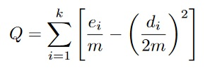
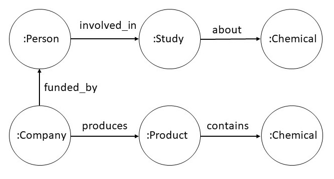
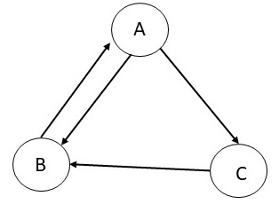
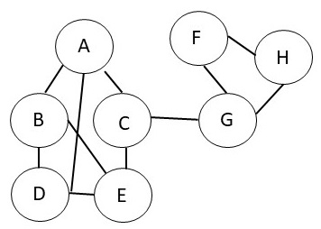

1. Introduction
Once a knowledge graph has been constructed, we can ask questions
about it and use its contents to draw new conclusions. For example, a
query might retrieve the fact that Alice works for Intuit and that
and is located in California. Retrieval alone returns these
stored facts exactly as they appear in the graph. Inference goes a
step further: using these facts and the rules of inference, the
system can conclude that Alice recently moved to California, even if this
statement is not explicitly stored. In this chapter, we study
inference algorithms that enable such reasoning. These algorithms are
accessed through the same declarative query interface used for
retrieval, allowing users to seamlessly obtain both explicitly stored
facts and newly inferred ones.
We will consider two broad classes of inference algorithms: graph
algorithms and ontology-based algorithms. Graph algorithms use graph
operations such as finding shortest paths between nodes and
identifying important or influential nodes in a graph. Ontology-based
algorithms, in contrast, operate over the same graph structure but
explicitly take its semantics into account. For example, they may
traverse only semantically meaningful paths or infer new relationships
using background domain knowledge. In this chapter, we examine both
classes of algorithms and how they complement each other.
2. Graph-based Inference Algorithms
We will consider three broad classes of graph algorithms: path
finding, centrality detection, and community detection. Path finding
focuses on identifying paths between two or more nodes that satisfy
specific properties, such as minimal length or cost. Centrality
detection aims to determine which nodes are most important within a
graph. Because "importance" can be defined in different ways, a
variety of centrality measures and algorithms have been
developed. Finally, community detection seeks to identify groups of
nodes that are more strongly related to each other than to the rest of
the graph. Community detection is particularly useful for studying
emergent patterns and behaviors in graphs that may not be apparent
from local or pairwise relationships alone.
We will take a closer look at each of these categories of graph
algorithms. For every category, we will start with an overview, show
how it can be applied to real-world problems, and introduce a few
representative algorithms that illustrate the key ideas in action.
2.1 Path Finding Algorithms
Path-finding in a graph can take several forms. One common task is
finding the shortest path between two nodes -- the route that minimizes
the total cost of traveling along the edges. If the edges have no
weights, we simply count the number of steps. For example, in a city
map, the shortest path between two intersections might correspond to
the route that takes the fewest turns or covers the least
distance.
Another variation is computing a minimum spanning tree, which
connects all nodes in the graph using the least total cost. Imagine
planning a trip where you want to visit several landmarks while
traveling as little as possible; the minimum spanning tree helps
identify the most efficient set of connections.
Finally, we can also look at finding shortest paths between all
pairs of nodes, which can be useful for applications like routing
delivery trucks across a city or designing efficient communication
networks. These path-finding algorithms help us navigate and organize
complex networks in ways that are both practical and efficient.
As an example of a specific shortest-path algorithm, we will
consider the A* algorithm, which generalizes the classical Dijkstra's
algorithm. The A* algorithm not only finds the shortest path in a
graph but also uses a heuristic to guide the search, making it more
efficient in many cases. It is widely used in applications such as
route planning in maps and solving search problems in AI planning.
The A* algorithm operates by maintaining a tree of paths
starting from the initial node and extending those paths one edge at a
time until its termination criterion is satisfied. At each step, it
determines which of the paths to extend based on the cost of the path
until now and the estimate of the cost required to extend the path all
the way to the goal. If n is the next node to
visit, g(n) the cost until now, and h(n) the heuristic
estimate of the cost required to extend the path all the way to the
goal, then it chooses the node that minimizes
f(n)=g(n)+h(n).
This combination of actual cost and estimated remaining cost allows
A* to efficiently find a shortest path while prioritizing paths that
appear most promising.
To ensure that A* finds an optimal mapth, we must use
an admissible heuristic, meaning it never over-estimates the
true cost of arriving at the goal. One possible variation, known as
the best first search, ignores the remaining cost by
setting h(n)=0, effectively, choosing the path with the least
accumulated cost so far. There is an extensive literature on the
different heuristics that can be used in the A* search, each
offering trade-offs between efficiency and accuracy depending on the
problem domain.
2.2 Centrality Detection Algorithms
The centrality detection algorithms are used to better understand the
roles played by different nodes in the overall graph. This analysis can help
us understand the most important nodes in a graph, the dynamics of a
group and possible bridges between groups.
There are several common variations of centrality detection
algorithms: degree centrality, closeness centrality, betweenness
centrality, and PageRank.
- Degree centrality counts the number of incoming
and/or outgoing edges connected to a node. For example, in a supply
chain network, a node with a very high outgoing degree might
indicate a supplier with a monopoly.
- Closeness centrality identifies nodes that have
the shortest paths to all other nodes in the graph. This can help
determine optimal locations for new services so that they are
accessible to the widest range of customers.
- Betweenness centrality measures how often a
node lies on the shortest paths between other nodes, reflecting the
node's influence as a bridge or intermediary within the
network.
- PageRank assesses the importance of a node based on the importance of the nodes that link to it, using a recursive approach originally developed for ranking web pages.
Each of these measures highlights a different aspect of a node's
role and influence within a network.
For our discussion here, we will consider the PageRank algorithm in
more detail.
The PageRank algorithm was originally developed
for ranking web pages in search engines. It measures
the transitive influence of a node: a node connected to a few
highly important nodes may be considered more influential than a node
connected to many less important nodes. We can define the PageRank of
a node mathematically as follows.
PR(u) = (1-d) + d * (PR(T1)/C(T1) + ... + PR(Tn)/C(Tn))
In the above formula, the node u has incoming edges from
nodes T1,...,Tn. We use d as a
damping factor which is usually set at 0.85. C(T1),...,C(Tn)
is the number of outgoing edges of
nodes T1,...,Tn. The algorithm operates
iteratively by first setting the PageRank for all the nodes to the
same value, and then improving it for a fixed number of iterations,
or until the values converge.
Beyond its original use in ranking web pages for search
engines, PageRank has found many other interesting
applications. For example, it is used on social media platforms to
recommend which users a person might follow. It has also been applied
in fraud detection to identify nodes in a graph that exhibit highly
unusual or suspicious activity.
2.3 Community Detection Algorithms
The general principle underlying community detection
algorithms is that nodes within a community have more
connections to each other than to nodes outside the
community. Community analysis can often serve as a first step in
understanding a graph, allowing for more detailed analysis of nodes
and relationships within each identified community.
There are several variations of community detection
algorithms: connected
components, strongly connected
components, label propagation,
and Louvain
algorithm).
The first two, connected components and strongly connected components, are often used in the initial analysis of a graph. These are standard techniques from graph theory:
- A connected component is a set of nodes in an
undirected graph such that there is a path between any two nodes in
the set.
- A strongly connected component is a set of
nodes in a directed graph such that, for any two nodes A and B in
the set, there is a path from A to B and a path from B to A.
Both label propagation and fast unfolding are bottom-up algorithms
for identifying communities in large graphs. We will explore these two
algorithms in more detail in the following sections.
Label propagation begins by assigning each node in the graph to its
own community. The nodes are then processed in a random order. For
each node, we examine its neighbors and update the node's community to
match the community held by the majority of its neighbors. If there is
a tie, it is broken uniformly at random. The algorithm terminates when
every node belongs to a community that is shared by a majority of its
neighbors.
The fast unfolding algorithm operates in two phases. Initially,
each node is assigned to its own community.
In the first phase, the algorithm considers each node and its
neighbors and evaluates whether moving the node into a neighbor's
community would result in an overall increase in modularity, a measure
of the quality of a community partition. If no modularity gain is
achieved, the node remains in its original community.
In the second phase, a new, smaller network is constructed in which
each node represents a community identified in the first phase. An
edge is added between two nodes if there was at least one edge between
nodes in their corresponding communities in Phase 1. Edges between
nodes within the same community in Phase 1 become self-loops in the
new network.
After the second phase is completed, the algorithm repeats by
applying the first phase again to this newly constructed graph. This
process continues until no further improvement in modularity is
possible.
One example of a modularity function used in the above algorithm is
shown below.

In the above formula, we calculate the overall modularity
score Q of a network that has been divided into k
communities where ei and di are
respectively the number of nodes, and total degree of nodes in
community i, and m is the total number of edges in the
network.
Both label propagation and fast unfolding algorithms can reveal
emergent and potentially unanticipated communities in a graph. Because
these algorithms involve randomness or local optimization choices,
different executions may produce different community structures.
3. Ontology-based Inference Algorithms
Ontology-based inference is a key feature that distinguishes a
knowledge graph system from a general graph-based system. We
categorize ontology-based inference into two main types: taxonomic
inference and rule-based inference
Taxonomic inference relies on class hierarchies and instance
relationships, allowing properties and relationships to be inherited
across the hierarchy. Rule-based inference, in contrast, uses general
logical rules to derive new facts from existing ones. Ontological
inference can be accessed through a declarative query interface,
enabling it to function as a specialized reasoning service for certain
classes of queries.
We begin by introducing rule-based inference and then use it as a
foundation for explaining ontology-based inference more broadly.
3.1 Rule-based Inference
Many rule-based systems share a common foundation that can be
understood through a simple rule language called Datalog. In this
section, we introduce the basic form of Datalog, describe some useful
extensions, and explain how Datalog programs are evaluated. We
conclude with a real-world example that demonstrates how rule-based
inference can be applied in practice.
3.1.1 Datalog
A Datalog program consists of a finte set of facts and rules. Facts
are statements about the world, such as: "John is the father of
Harry". Rules describe how new facts can be derived from other facts,
for example, "If X is a parent of Y and if Y is a
parent of Z, then X is a grand-parent
of Z". Facts and rules are written as a clause of the following
form:
Each Li is a literal of the
form pi(t1,
... ,tn) such that pi is
a predicate symbol and the tj is
a term. A term is either a constant (representing a
specific object) or a variable (representing an unknown
object).
In a Datalog clause, The left-hand side is called its head,
and the right-hand side is called its body. The body of a
clause may be empty. Clauses with an empty body represent facts; while
clauses with at least one literal in the body represent rules.
For example, the fact that "John is the father of Harry" can be written
as father(john, harry). The rule "If X is a parent
of Y and if Y is a parent of Z, then X is
a grand-parent of Z" can be written as:
|
grand_parent(X,Z) :- parent(X,Y), parent(Y,Z)
|
In this example, the symbols parent
and grand_parent are predicate symbols, the
symbols john and harry are constants, and the
symbols X, Y and Z are variables.
Any Datalog program P must satisfy the
following safety conditions. First, each fact of P must
be ground, that is, it does not contain any variables. Second, every
variable that appears in the head of a rule of P must also
appear in the body of the that rule. These conditions guarantee that
the set of all facts that can be drived from a Datalog program is
finite.
A Datalog program determines what is true by starting from a set of
known facts and repeatedly applying rules until nothing new can be
inferred. The queries simply ask what can be derived from this
process.
3.1.2 Extensions to Datalog
In the basic form of Datalog introduced above, the negation sign
"~" is not allowed, and therefore, we cannot infer negative facts.
With a simple extension, also known as the closed world assumption,
we can infer negative facts: if a fact cannot be derived from a set
of Datalog clauses, then we conclude that the negation of this fact
is true. Negative facts are written as positive facts precded by the
negation symbol "~". For example, in the simple program introduced
until now, we can conclude ~parent(john, peter).
With the extension described above, we can also allow negated
literals in the bodies of rules. To guarantee a unique result, we need
to impose an additional condition called
stratification. Stratification requires that no predicate appearing in
the head of a rule can also appear negated in the body of the same
rule, either directly or indirectly through multiple rule
applications. This condition ensures that the Datalog program produces
a unique set of conclusions.>/p>
Pure Datalog is limited to reasoning over individual facts and does not
provide constructs for reasoning about collections of facts. In many
practical applications, however, it is necessary to compute aggregate
properties such as counts, minima, maxima, or sums. For this reason,
most practical Datalog engines support aggregate predicates
as an extension to the core language.
Aggregates allow a rule to refer to a set of values derived from the
body of the rule and to compute a single summary value over that set.
Common aggregates include count, sum, min,
max, and avg.
For example, the following rule computes the number of children for
each person:
|
num_children(X, N) :- countofall(Y, parent(X, Y), N).
|
Here, countofall binds N to the number of distinct
values of Y for which parent(X,Y) holds. The aggregate
is evaluated after all bindings for the body of the rule have been
determined.
Other important extensions to Datalog include the use of function
symbols, allowing disjunctions in the head of a rule, and supporting
negation that does not rely on the closed world assumption. These
features are generally supported in a family of languages known as
Answer Set Programming (ASP).
3.1.3 Evaluating Datalog Programs
o enable rule-based reasoning on a knowledge graph, a Datalog rule
engine is typically connected to the graph's data. In this section, we
will examine several reasoning strategies commonly used by Datalog
engines.
In a bottom up reasoning strategy, also known as the Chase, all
rules are against the knowledge graph, adding new facts until no
more facts can be derived. In some cases, it may be desirable to
put in place termination strategies to deal with
situations where additional reasoning offers no additional
insight. Once we have computed the Chase, the reasoning can proceed
using traditional query processing methods.
In top down query processing, we begin from the query to be
answered, and apply the rules on as needed basis. A top down
strategy requires a tighter interaction between the query engine of
the knowledge graph with the rule evaluation. This approach,
however, can use lot less space as compared to the bottom up
reasoning strategy.
Highly efficient and scalable rule engines use query optimization
and rewriting techniques. They also rely on caching strategies to
achieve efficient execution.
3.1.4 Example Scenario Requiring Rule-based Reasoning
Consider a property graph with the schema shown below. Companies
produce products that contain chemicals. People are involved in studies
about chemicals, and they can be funded by companies.

Given this property graph, we may want to determine whether a person
could have a conflict of interest when participating in a study. We can define the
conflict relationship using the following Datalog rule.
|
coi(X,Y,Z) :-
involved_in(X,Y) & about(Y,P) & funded_by(X,Z) & has_interest(Y,P)
|
|
has_interest(X,Z) :- produces(X,Y) & contains(Y,Z)
|
The relation has_interest does not exist in the property graph
schema, but a rule engine can compute it using its definition.
Using this computed relation, the rule engine can derive
the coi relation.
In some cases, we may want to add the
computed values of the coi relation back into the knowledge
graph. As coi is a ternary relation, we need to reify it.
As reification requires adding new objects in the graph, we can
specify it using an existential rule as shown below.
|
∃c conflict_of(c,X) & conflict_reason(c,Y) & conflict_with(c,Z) :-
involved_in(X,Y) & about(Y,P) & funded_by(X,Z) & has_interest(Y,P)
|
In general, existential rules are needed whenever we need to
create new objects in a knowledge graph. Relationship reification
is a common example. Sometimes, we may need to create new
objects to satisfy certain constraints. For example, consider the
constraint: every person must have two parents. For a given person,
the parents may not be known, and if we want our knowledge graph to
remain consistent with this constraint, we must introduce two new
objects representing the parents of a person. As this can lead to
infinite number of new objects, it is typical to set a limit on how
the new objects are created.
3.2 Taxonomic Reasoning
Taxonomic reasoning is useful in situations where it is useful to
organize knowledge into classes. Classes can be thought of as unary
relations -- that is a set of objects that share a common property. In
this section, we will introduce the key concepts such as class
membership, class specialization, disjoint classes, value restriction,
inheritance and various inferences that can be drawn using them.
Both property graph and RDF data models support classes. In
property graphs, the node types correspond to classes. In RDF, an
extension called RDF schema (RDFS) allows the definition of
classes. More advanced RDF extensions such as the Web Ontology
Language (OWL) and the Semantic Web Rule Language (SWRL), provide
full support for defining classes and rules.
There is no strict boundary between rule-based reasoning and
taxonomic reasoning. We will use Datalog as a specification language
for taxonomic reasoning, and a Datalog engine can perform those inferences.
Specialized taxonomic reasoning systems, however, may leverage graph
algorithms that take advantage of the class hierarchies.
We will introduce the basic concepts of taxonomies such as class
membership, disjointness, constraints and inheritance using Datalog
as a specification language without making any specfic reference to
RDF or property graph model of graphs..
3.2.1 Class Membership
Suppose we wish to model data about kinship. We can define the
unary relations of male and female as classes, that
have members art, bob, bea, coe,
etc. The member of a class is referred to as an instance of that
class. For example, art is an instance of the
class male.
For every unary predicate that we also wish to refer to as a class, we
introduce an object constant with the same name as the name of the
relation constant as follows.
Thus, male is both a relation constant, and an object
constant. This is an example use of metaknowledge, and is
also sometimes known as punning.
To represent that art is an instance of the
class male, we introduce a relation
called instance_of and use it as shown below.
| instance_of(art,male) | instance_of(bea,female) |
| instance_of(bob,male) | instance_of(coe,female) |
| instance_of(cal,male) | instance_of(cory,female) |
| instance_of(cam,male) |
3.2.2 Class Specialization
Classes can be organized into a hierarchy. For example, we can introduce a class
person. Both male and female are then
subclasses of person.
| subclass_of(male, person) |
subclass_of(female, person) |
The subclass_of relationship is transitive. That is, if
A is a subclass of B, and B is a subclass of
C, then A is also a subclass of C. For example,
if mother is a subclass of female, then
mother is also a subclass of person.
|
subclass_of(A, C) :- subclass_of(A, B) & subclass_of(B, C)
|
The subclass_of and instance_of relationships are
closely related. If A is a subclass of B, then
every instance of A is also an instance of B.
In our example, all instances of male are also instances of
person.
|
instance_of(I, B) :- subclass_of(A, B) & instance_of(I, A)
|
A class hierarchy must not contain cycles. A cycle would imply that a
class is a subclass of itself, which is semantically incorrect and
undermines the meaning of specialization.
3.2.3 Class Disjointness
We say that a class A is disjoint from another class
B if no individual can be an instance of both classes at the
same time. We may explicitly declare two classes to be disjoint, or we
may declare a set of classes to form a partition, meaning that
the classes in the set are pairwise disjoint.
In our kinship example, the classes male and female
are disjoint. If an individual were inferred to be an instance of both,
this would indicate an inconsistency in the data. We capture such
inconsistencies using a distinguished atom illegal, which
signals that the condition specified in the body of the rule is not
allowed.
|
illegal :- disjoint(A, B) & instance_of(I, A) & instance_of(I, B)
|
|
disjoint(A1, A2) :- partition(A1, ..., An)
|
|
disjoint(A2, A3) :- partition(A1, ..., An)
|
|
disjoint(An-1, An) :- partition(A1, ..., An)
|
3.2.4 Class Definition
Classes can be defined using necessary and sufficient
relation values. A relation value is necessary for a class if
every instance of the class must satisfy it. For example,
age may be a necessary relation value for the class
person, since every person has an age, but having an age alone
is not sufficient to conclude that something is a person.
A relation value (or set of relation values) is sufficient for a
class if any individual that satisfies those relations can be inferred
to be an instance of the class.
For example, consider the class brown_haired_person. It is
both necessary and sufficient that an individual is a person
and has brown hair in order to belong to this class.
|
instance_of(X, brown_haired_person) :-
instance_of(X, person) &
has_hair_color(X, brown).
|
Classes that are described only using necessary relation values are
called primitive classes. In contrast, classes for which we
specify both necessary and sufficient relation values are called
defined classes.
In a rule-based setting, a sufficient class definition is characterized
by the presence of an instance_of literal in the head of the
rule, allowing the reasoner to infer class membership whenever the
conditions in the body are satisfied.
3.2.5 Value Restriction
Value restrictions constrain the arguments of a relation to be
instances of specific classes. In the kinship example, we may wish to
restrict the parent relationship so that both of its arguments
are always instances of the class person.
With such a restriction in place, if the reasoner is asked to prove
parent(table, chair), it can immediately conclude that this
fact is not true, since neither table nor chair is an
instance of person. Value restrictions thus act as integrity
constraints that rule out semantically invalid facts.
A restriction on the first argument of a relation is called a
domain restriction, while a restriction on the second argument
is called a range restriction. Similar restrictions can be
defined for relations of higher arity.
|
illegal :- domain(parent,person) & parent(X,Y) & ~instance_of(X,person)
|
|
illegal :- range(parent,person) & parent(X,Y) & ~instance_of(Y,person)
|
For example, if the knowledge graph contains the fact
parent(art, chair) and we know that art is a
person but chair is not, the range restriction will
cause the atom illegal to be derived, indicating an
inconsistency in the data or rules.
As with disjointness constraints, value restrictions do not derive new
facts but instead detect violations. Their correct interpretation
relies on the ability to infer negative facts (such as
~instance_of(chair, person)), typically under a closed world
assumption or a stratified form of negation.
3.2.6 Cardinality and Number Constraints
We can further restrict the values of relations by specifying
cardinality and numeric constraints. A cardinality
constraint restricts the number of values a relation may have for a
given argument, while a numeric constraint restricts the range of
numeric values that a relation may take.
For example, we may require that every person has exactly two parents,
and that the age of a person lies between 0 and 100 years.
|
illegal :- instance_of(X, person) &
~countofall(P, parent(P, X), 2).
|
|
illegal :- instance_of(X, person) &
age(X, Y) &
Y < 0.
|
|
illegal :- instance_of(X, person) &
age(X, Y) &
Y > 100.
|
The first rule expresses a cardinality constraint: for every instance
of person, the number of distinct values P such that
parent(P,X) holds must be exactly two. The aggregate predicate
countofall is assumed to return the number of distinct
bindings that satisfy its second argument.
The second and third rules express numeric constraints on the
age relation, ruling out values that fall outside the allowed
range. As with other constraints, these rules do not derive new facts
but instead detect violations by concluding illegal.
In practice, enforcing cardinality constraints may require additional
mechanisms beyond pure Datalog. If parent information is missing, a
reasoner may either report a violation, or -- when existential rules are
allowed -- introduce fresh objects to satisfy the constraint. To prevent
unbounded object creation, systems typically impose limits or adopt
restricted forms of existential reasoning.
3.2.7 Inheritance
When an object belongs to a class, it automatically takes on the
properties associated with that class. This process is known as
inheritance. For example, if we state that
art is an instance of the class
brown_haired_person, we can infer that
has_hair_color(art, brown) holds.
An object may belong to more than one class at the same time. While
this is often useful, it can lead to problems when different classes
impose conflicting requirements. For example, if
art is an instance of both
brown_haired_person and bald_person, one class
requires that art has hair, while the other requires that
art has no hair. These requirements cannot both be satisfied
and result in a contradiction.
When such conflicts occur, a reasoning system must decide how to handle
them. One approach is to reject the information that causes the
conflict. Another approach is to use specialized techniques, known as
paraconsistent reasoning, which allow reasoning to continue
even in the presence of inconsistent information.
3.2.8 Reasoning with Classes
When working with classes in a knowledge graph, there are four main types
of inference that are particularly useful:
-
Determining whether one class is a subclass of another. For example,
is male a subclass of person?
-
Determining whether a given object is an instance of a class. For
example, is art an instance of brown_haired_person?
-
Determining whether a specific fact (a ground relation atom) is
true or false. For example, is parent(art, cal) true?
-
Finding all possible values of variables that make a relation true.
For example, who are the children of art?
The first two types of reasoning -- subclass and instance checks -- can be
implemented as simple path-finding operations over the graph of classes
and instances. The last two types -- evaluating ground facts and computing
variable bindings -- are handled by a Datalog engine using its rule-based
inference mechanisms.
4. Summary
In this chapter, we explored different types of inference algorithms
for knowledge graphs. We discussed graph-based algorithms such as
path finding and community detection, which are widely supported by
practical graph engines. These engines typically provide only limited
support for ontology-based and rule-based reasoning. More recently,
knowledge graph engines have begun to emerge that support both
general-purpose graph algorithms and advanced reasoning capabilities,
enabling more sophisticated analysis and inference over complex
datasets.
5. Further Reading
An excellent reference for detailed description of different graph algorithms along with the code for Neo4j and Apache Spark graph databases is available in [Needham
& Hodler 2019]. A comprehensive account of Datalog and logic programming is available as a textbook [Genesereth
& Chaudhri 2020]. The description of the ontology based inference is inspired by a large scale knowledge construction project [Chaudhri
et. al. 2013]
[Needham
& Hodler 2019] Needham, Mark and Amy E. Hodler. Graph Algorithms:
Practical Examples in Apache Spark and Neo4j. OReilly Media,
2019. ISBN 9781492047681.
[Genesereth
& Chaudhri 2020] Genesereth, M., & Chaudhri,
V. K. (2020). Introduction to Logic Programming. Springer
International
Publishing. https://www.amazon.com/Introduction-Programming-Synthesis-Artificial-Intelligence/dp/3031004582/
[Chaudhri
et. al. 2013] Chaudhri, V. K., Heymans, S., Wessel, M., & Son,
T. C. (2013). Object-oriented knowledge bases in logic
programming. Theory and Practice of Logic Programming, 13(4-5), 1-12.
https://static.cambridge.org/content/id/urn:cambridge.org:id:article:S1471068413000112/resource/name/tlp2013022.pdf
Exercises
Exercise 6.1.
For the tiled puzzle problem shown below, we can define two different admissible heuristics: Hamming distance and Manhanttan distance. The Hamming distance is the total number of misplaced tiles. The Manhattan distance is the sum of the distance of each tile from its desired position. Answer the questions below assuming that in the goal state, the bottom right corner will be empty.
|
(a) |
What is the Manhattan distance for the configuration shown above? |
|
(b) |
What is the Hamming distance for the configuration shown above? |
|
(c) |
If your algorithm was using the Manhattan distance as a heuristic, what would be its next move? |
|
(d) |
If your algorithm was using the Hamming distance as a heuristic, what would be its next move? |
Exercise 6.2.
Consider a graph with three nodes and the edges as shown in the
table below for which we will go through first few steps of
calculating the Page rank. We assume that the damping factor is set
to 1.0. We initialize the process by setting the Page rank of each
node to 0.33. In the first iteration, as A has only one incoming
edge from B with a score of 0.33, and B has only one outgoing edge,
the score of A remains 0.33. B has two incoming edges --- the first
incoming edge from A (with a score of 0.33 which will be divided
into 0.17 for each of the outgoing edge from A), and the second
incoming edge from C (with a weight of 0.33 as C has only one
outgoing edge). Therefore, B now has a Page rank of 0.5. C has one
incoming edge from A (with a score of 0.33 which will be divided
into 0.17 for each of the outgoing edge from A), and therefore, the
Page rank of C is 0.17. Follow this process to calculate their ranks
at the end of iteration 2.

|
(a) |
What is the Page rank of A at the end of second iteration? |
|
(b) |
What is the Page rank of B at the end of second iteration? |
|
(c) |
What is the Page rank of C at the end of second iteration? |
Exercise 6.3.
For the graph shown below, calculate the overall modularity score for
different choices of communities.

|
(a) |
What is the overall modularity score if all the nodes were in the same community? |
|
(b) |
What is the overall modularity score if we have two
communities as follows. The first community contains A, B and
D. The second community contains the rest of the nodes. |
|
(c) |
What is the overall modularity score if we have two
communities as follows. The first community contains A, B, C, D and
E. The second community contains the rest of the nodes. |
|
(d) |
What is the overall modularity score if we have two
communities as follows. The first community contains C, E, G and
H. The second community contains the rest of the nodes. |
Exercise 6.4.
Considering the statements below, state whether each
of the following sentence is true or false.
| subclass_of(B,A) | subclass_of(C,A) | subclass_of(D,B) |
| subclass_of(E,B) | subclass_of(F,C) | subclass_of(G,C) |
| subclass_of(H,C) | disjoint(B,C) | partition(F,G,H) |
|
(a) |
disjoint(D,E) |
|
(b) |
disjoint(B,G) |
|
(c) |
disjoint(F,G) |
|
(d) |
disjoint(E,C) |
|
(e) |
disjoint(A,F) |
Exercise 6.5.
Consider the following statements.
- George is a Marine.
- George is a chaplain.
- Marine is a beer drinker.
- A chaplain is not a beer drinker.
- A beer drinker is overweight.
- A Marine is not overweight.
|
(a) |
Which statement must you disallow to maintain consistency? |
|
(b) |
What are the alternative set of statements that might be true? |
|
(c) |
What conclusions you can always draw regardless of which statement you disallow? |
|
(d) |
What conclusion you can draw only some of the times? |
Exercise 6.6.
The goal of this exercise is to apply graph algorithms to the company
knowledge graph you created in Exercise 5.6. You will use path-finding,
centrality, and community-detection algorithms to analyze risks, causal
relationships, and business impacts represented in the graph.
You may use the suggested questions below as guidance. You are also
encouraged to formulate additional queries that reflect the structure
and semantics of your own knowledge graph.
Path-Finding Queries
Use shortest-path or constrained-path algorithms to analyze causal and
dependency relationships.
-
Identify the shortest or most relevant paths from external headwinds
(for example, macroeconomic risks or regulatory changes) to
revenue-related nodes. Which headwinds are closest, in graph
distance, to revenue impact?
-
How directly does a given macro risk affect the company? Measure
directness using path length, edge weights, or path constraints.
-
What is the shortest causal path explaining margin compression?
Interpret the result as a minimal causal narrative.
Centrality Analysis
Use centrality measures such as degree, betweenness, or PageRank to
identify influential nodes in the graph.
-
Which risks appear most structurally important in the graph?
Justify your answer using one or more centrality measures.
-
Which risks connect or propagate across multiple sectors or business
units? Identify nodes that play a bridging role.
-
Which factors are closest to, or most influential on, earnings-related
nodes?
Community Detection
Use community-detection algorithms to identify higher-level structure in
the graph.
-
Identify communities that represent coherent causal themes for the
company (for example, macroeconomic risk, competitive pressure, or
supply-chain disruption).
-
Which causal narratives are fragile? Identify communities that rely
on weak or sparse assumptions, such as low internal connectivity or
heavy dependence on a small number of edges.
-
Optional (advanced): If your graph includes data from multiple
earnings calls or time periods, identify which causal narratives
persist across time.
For each query, describe the algorithm used, the nodes or subgraphs
returned, and a brief interpretation of the result in business terms.
Visualizations are encouraged where appropriate.
Exercise 6.7. The goal of this exercise is to experiment with
ontology-based inference using the textbook knowledge graph you
created as part of Exercise 5.7. You will use class hierarchies,
constraints, and inherited properties to answer conceptual queries
about the graph.
Below are some suggested queries. You are encouraged to formulate
additional queries that are specific to the structure and semantics of
your own knowledge graph.
-
Describe a concept X. Your description should include:
the taxonomic relationships of X (such as its superclasses
and subclasses), all relation values associated with X
through inheritance or definition, and any applicable constraints.
-
How is concept X related to concept Y? Traverse
all relevant paths between X and Y in the ontology
and present the relationships in a clear and easy-to-understand
manner.
-
Compare two concepts X and Y. Explain how the two
concepts are similar and how they differ in terms of their
taxonomic relationships, relation values, and applicable
constraints.
For each query, explain which ontology-based inferences were used and
how they contributed to the final result.
|
 CS520
CS520